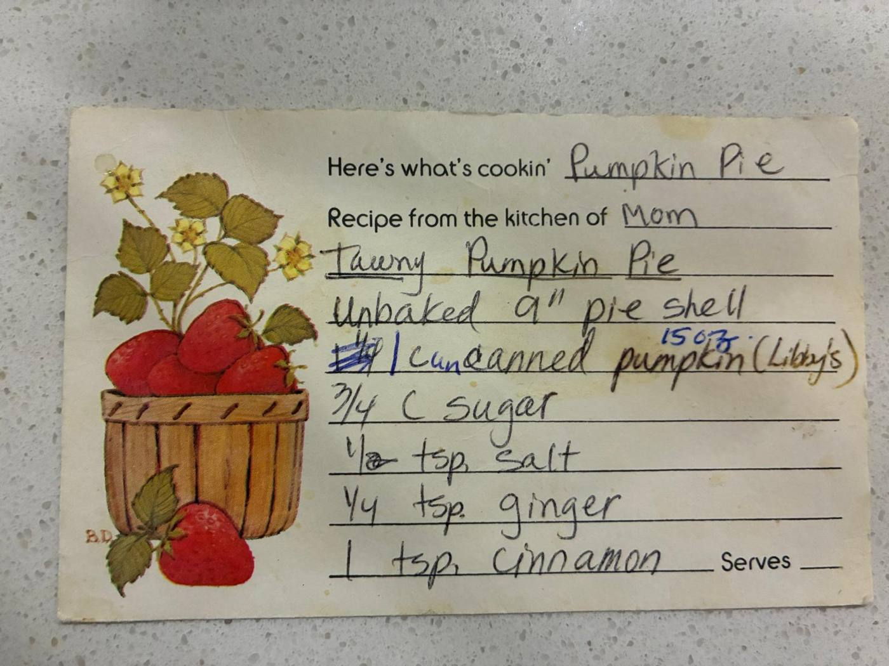
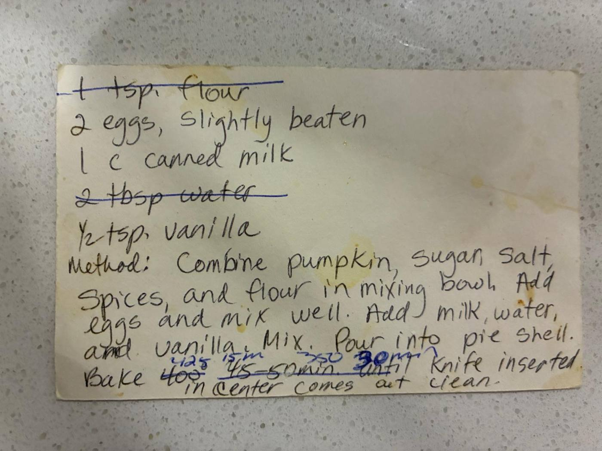

Desserts
Tawny Pumpkin Pie
From the kitchen of Mom
Oven425°F, then 350°F
Bake15 min + 30 min
Pie9-inch


Mom's original card (front and back) · tap to enlarge
Ingredients
Method tap a step to mark it done
- Combine the pumpkin, sugar, salt and spices in a mixing bowl.
- Add the eggs and mix well.
- Add the milk and vanilla. Mix.
- Pour into the pie shell.
- Bake at 425°F for 15 minutes.
- Lower the oven to 350°F and bake 30 minutes more, until a knife inserted in the center comes out clean.